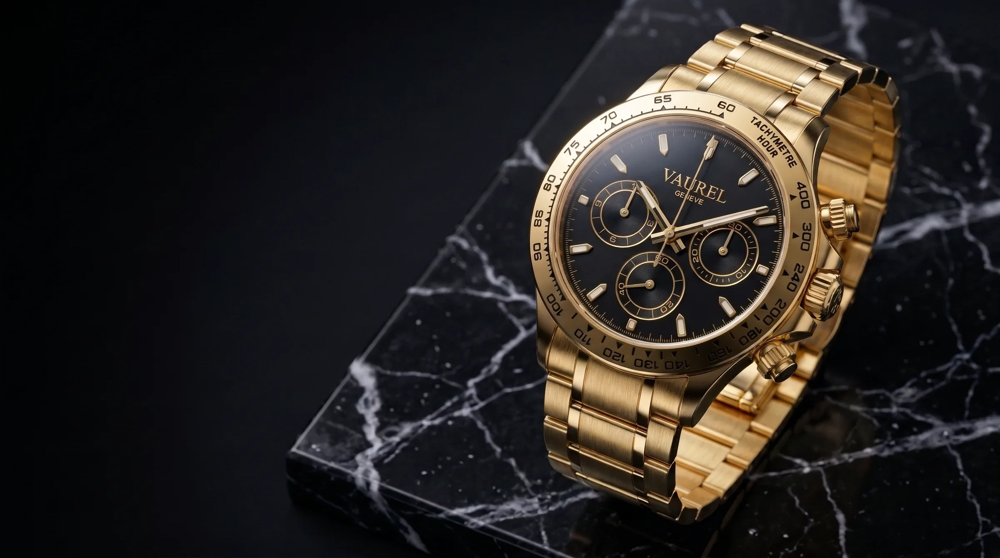
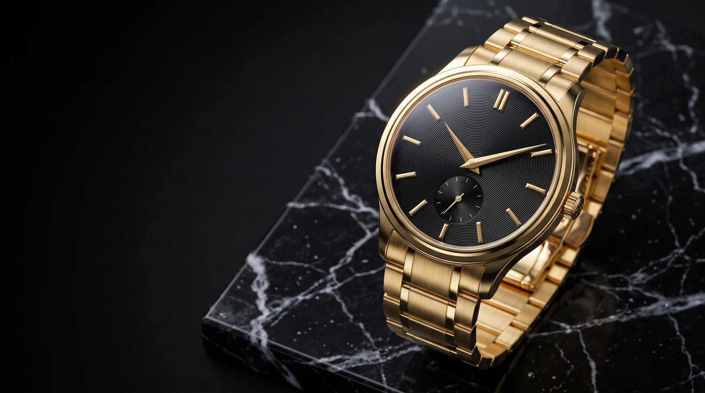

I · The dial
Onyx
A polished black stone with applied gold indices. This is the dial of the Onyx model, in a 39 mm case.

Maison Vaurel · Geneva
Three counters, a tachymeter scale engraved in the gold and a black lacquered dial. A 40 mm case on a solid gold bracelet.
Open the watchTachymeter bezel
Engraved in the gold, the scale reads an average speed over one kilometre, using the chronograph.
Exploded view
Case and bezel
18k gold
Case, bezel and bracelet in solid yellow gold, polished and brushed by hand.
Movement
Calibre V.21
Mechanical movement with chronograph, 31 jewels, bridges decorated by hand.
Power reserve
72 h
Three days of autonomy once fully wound.
Fictional product. Figures shown for illustration.

I · The dial
A polished black stone with applied gold indices. This is the dial of the Onyx model, in a 39 mm case.
II · Beneath
The dial fades away. Rhodium plated bridges, gold wheels, rubies set in their chatons, screws blued in the flame.
III · Calibre V.21
Manual winding. Every bridge is bevelled and decorated by hand, then left on view in the Ossature model.
Workshop
A watch is judged by what nobody sees: the angle of a bridge, the blue of a screw, the regularity of a second.
Every bridge edge filed to forty five degrees, then polished until it holds a single line of light.
Parallel stripes drawn across the bridges in a single pass, without correction.
Steel screws heated slowly until they turn a deep, even blue.
Three dials · 01 / 03
By appointment
Choose a salon, a model and a day. The house prepares the pieces in advance.